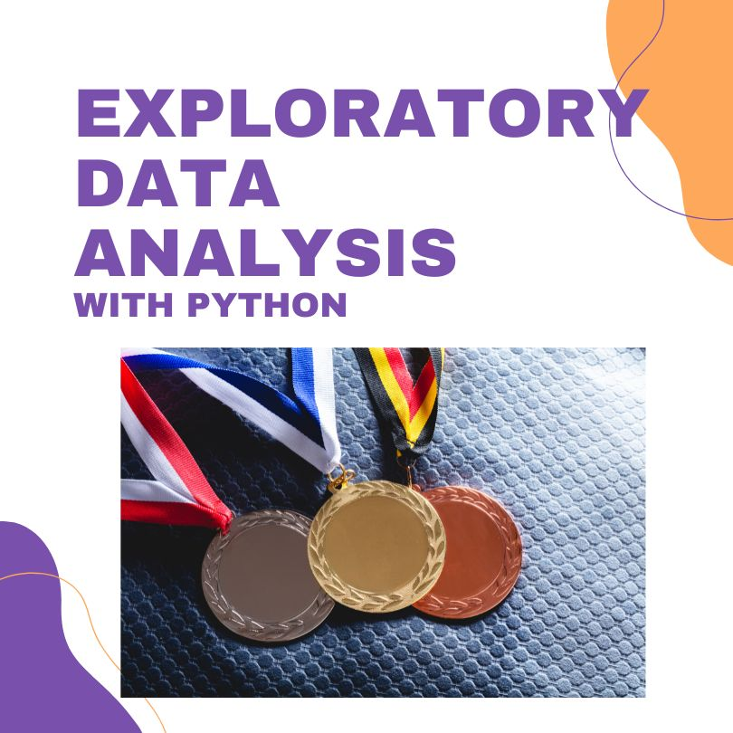
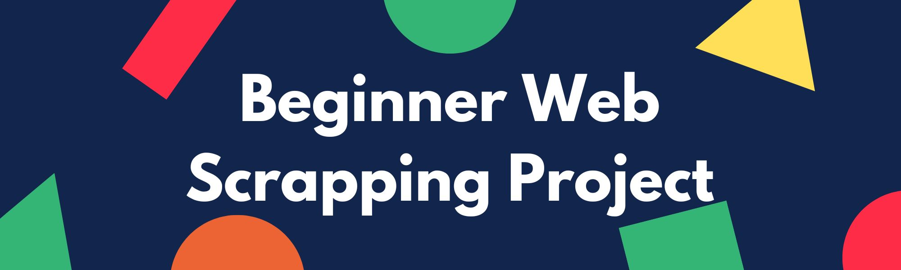
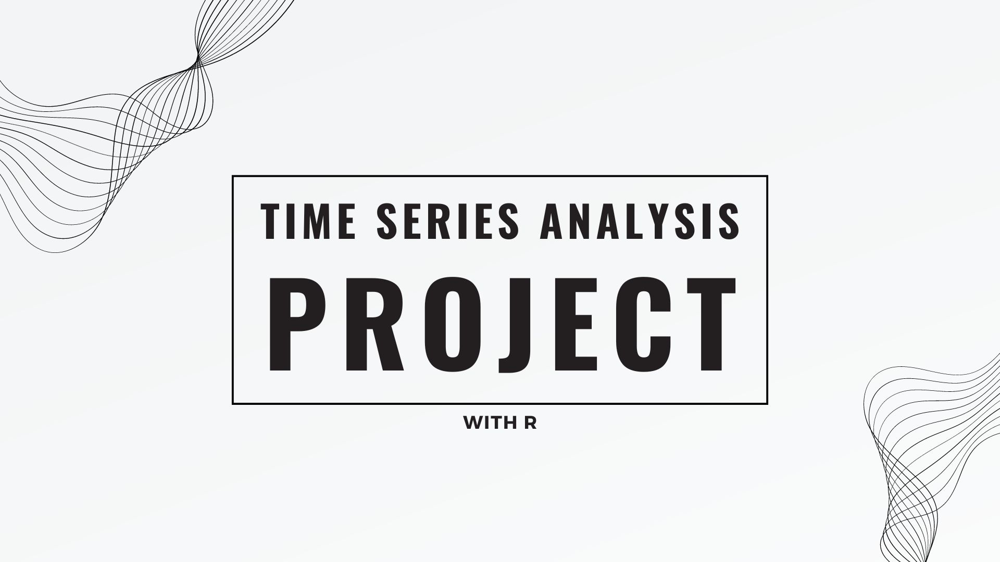
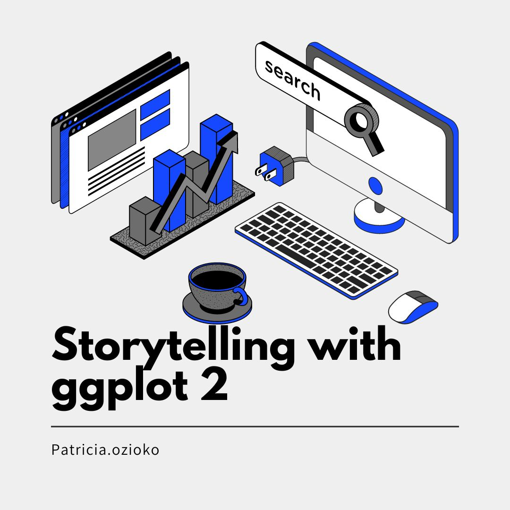
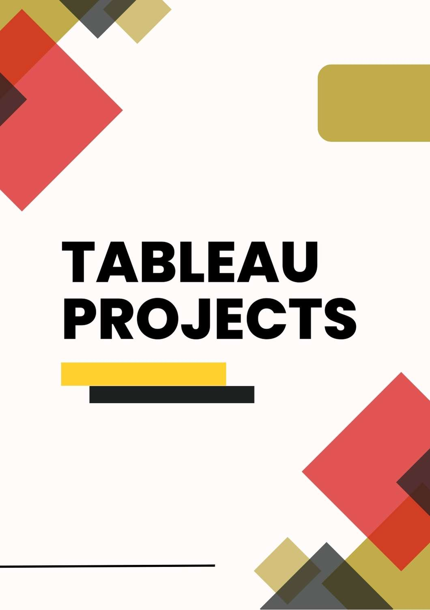

The world of sports, particularly the Olympic Games, serves as a rich repository of data reflecting the diversity and accomplishments of athletes across various disciplines.
This project embarks on an exploratory data analysis (EDA) journey with the goal of unraveling intriguing patterns, trends, and insights hidden within Olympic datasets.

I conducted an in-depth analysis of HR data using SQL, revealing key insights such as the department with the most employees, total number of employees, department count, average age, gender distribution, job title distribution, salary insights including average salary and highest earners, employee and department relationships, and department-wise average age and salary. The project showcases my SQL proficiency in extracting valuable information for strategic decision-making

In this project, I explored the fascinating world of web scraping using Python's Beautiful Soup library. As People data analyst, I embarked on this personal project to enhance my skills in data acquisition and analysis.
The objective of this project was to gather data from wikipedia. Leveraging the power of Beautiful Soup alongside other Python libraries, I navigated through HTML structures and parsed data.
Through this project, I gained hands-on experience in scrapping data from a webpage.
Explored a comprehensive SQL project analyzing Airbnb listings. Covered basic retrieval, filtering, aggregate functions, joins, CTEs, subqueries, window functions, temporary tables, views, advanced aggregation, date manipulation, and handling NULL values..

In this project, I will be exploring the fascinating world of time series analysis and leveraging forecasting models.
Objective: The primary objective of this project is to forecast sales and revenue using robust forecasting models to predict future values of the time series dataset i chose.

Donec eget ex magna. Interdum et malesuada fames ac ante ipsum primis in faucibus. Pellentesque venenatis dolor imperdiet dolor mattis sagittis magna etiam.

This is a collection of my Tableau projects.